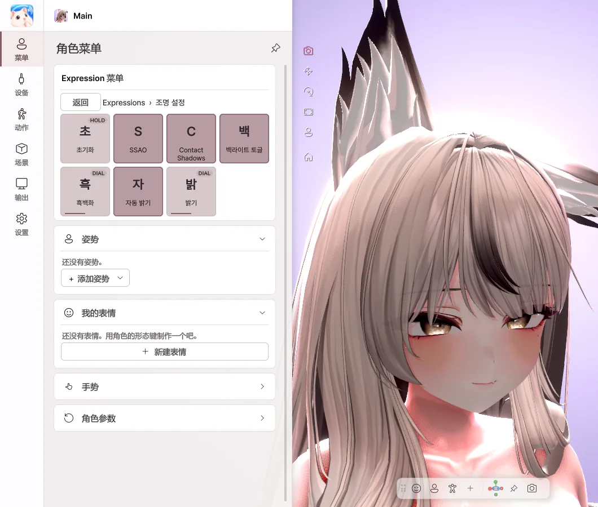
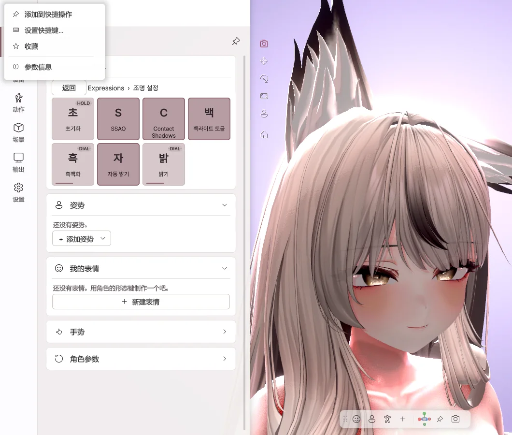
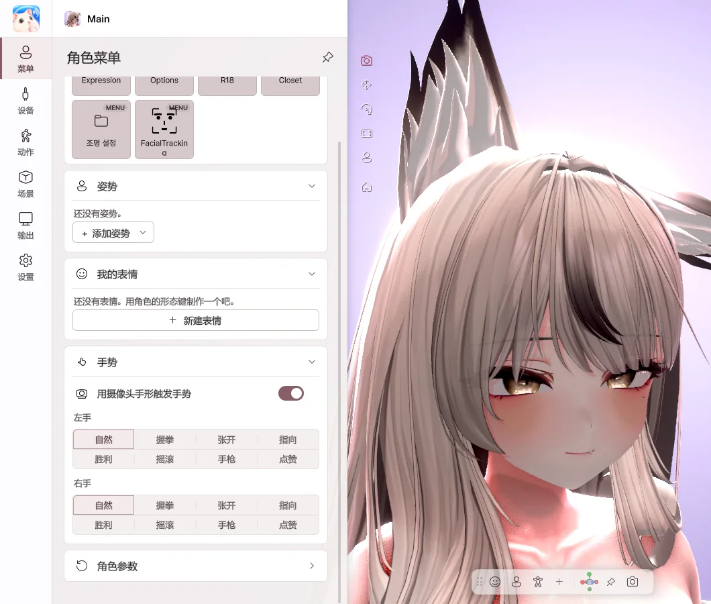

5. 角色菜单
直接使用在 VRChat 中用过的角色 Expression 菜单。服装和发型开关、表情按钮、Radial、Puppet 都与 VRChat 中的运作方式完全相同。
Expression 菜单

- Toggle — 每次点击都会切换开启 / 关闭。
- Button — 按住期间保持开启。
- Sub Menu — 打开子菜单。用 返回 回到上一级。
- Radial · Puppet — 用滑块或摇杆设定数值。
右键菜单项

- 添加到快捷操作 — 作为按钮放到底部工具栏。
- 设置快捷键… — 游戏中也能一键开启。
- 收藏 — 在菜单最上方直接使用。
手势

- 选择左手 · 右手手势，触发角色的手势表情。
- 开启 用摄像头手形触发手势 后，你的手形会直接成为手势。
恢复默认值
点击 角色参数 › 恢复默认值，菜单的数值会恢复为角色的默认值。服装状态等会被保存的数值，下次运行时也会保留。
快捷操作
将常用动作做成按钮或按键。可以加入菜单项、手势、相机视图、灯光预设等；右键按钮可更改名称和位置。
重置
| 重置 | 全部重置 | |
|---|---|---|
| 作用 | 将追踪、手部姿势、PhysBone 恢复到初始状态 | 除上述内容外，服装 · 位置 · 相机也恢复到初始状态 |
| 执行 | 顶部的 ⟲ | 右键 ⟲，或 设置 › 常规 |